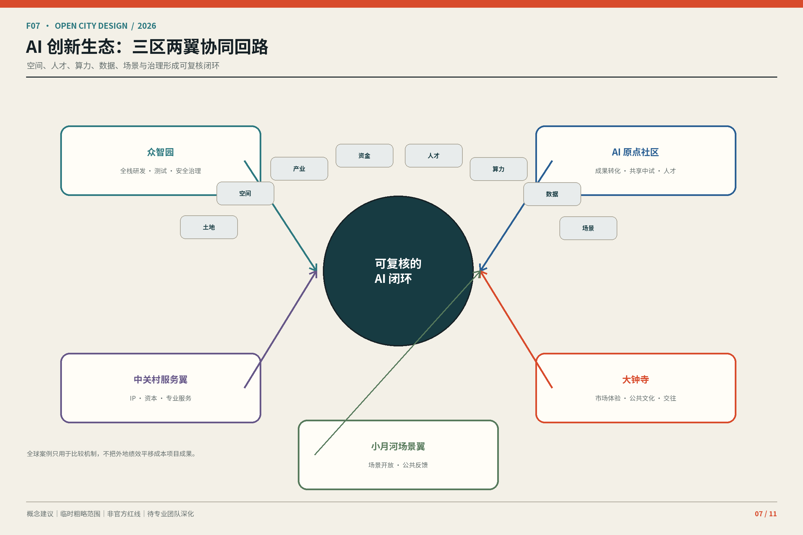
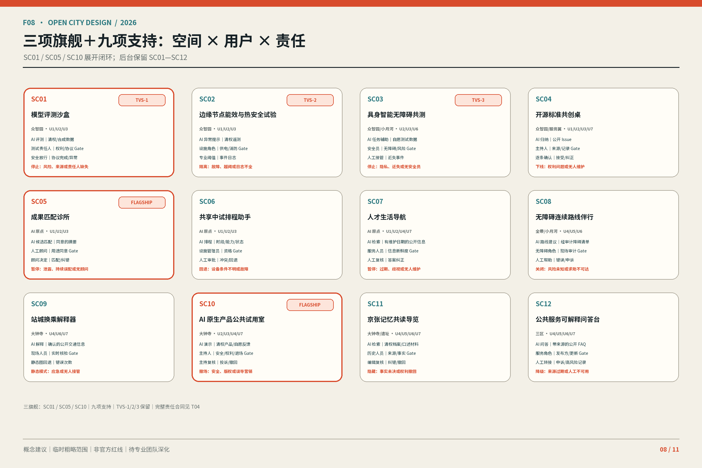
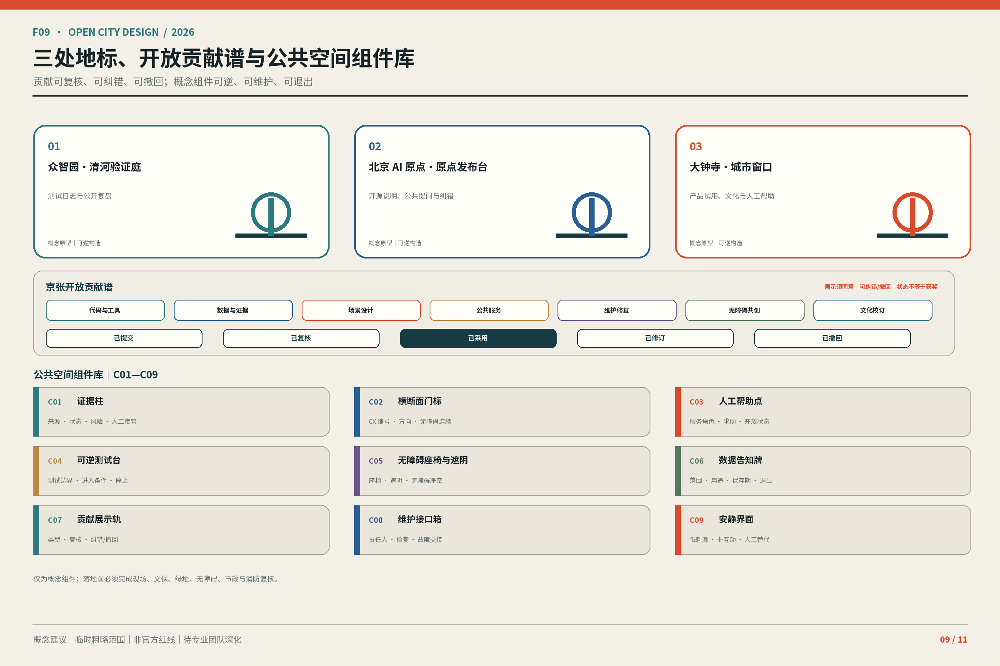
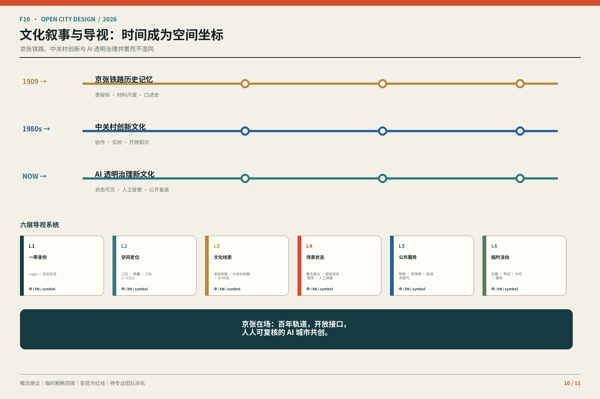
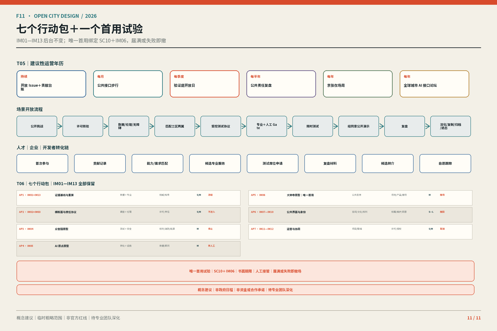

京张在场：把 AI 变成可见、可接管、可验证、可撤回的城市界面
以一条在场脊柱、三处在场原型、十二条候选责任横断面和一个有期限、可逆的首用试验，把 AI 转译为公众能够看见、接管、验证和撤回的城市界面。
京张在场：把 AI 变成可见、可接管、可验证、可撤回的城市界面
主命题：京张在场把 AI 从隐藏能力变成三处公众可见、可人工接管、可验证、可撤回的城市界面。人在场、证据在场、责任在场不是三个口号，而是同一评价准则：能否进入和申诉，能否追溯来源与失败，能否找到责任人并恢复人工或撤场。本方案仍是开放共创的概念建议，不是获批规划、政府承诺或工程结论。
四个一级消息是：①三重在场评价准则；②一条在场脊柱＋三处在场原型＋十二条候选责任横断面的空间语法；③SC01、SC05、SC10 三旗舰＋九支持场景；④七个行动包＋一个有期限、可逆的首用试验。30 秒读 F01→F03→F08→F11；3 分钟沿同一路径核对空间、场景和退出；15 分钟再下钻 F02/F04/F05/F06/F07/F09/F10 与 T01—T07、矩阵和来源。
设计依据与资料清单
公告、面向智能体任务书、场地资料包、来源登记表和本地专业标准快照限定任务与表达；处理资料只承担导航作用。来源 来源 来源
组织方尚未提供三层范围和三处重点区的正式 polygon。SITE 与 KEY_AREA 是临时粗略约束，只能生成图件、入口自检和比较情景；不能证明红线、权属、审批、法定用地、精确面积或工程可行性。正式边界到位后，九类图层、指标、F01—F11、HTML 与 PDF 必须同批重算。来源 空间数据
法定控规、逐栋现状、结构消防、日照管线、文保、道路断面、客流停车、市政容量、企业人才底数和现场调查仍缺失。因此本文不填写未知 FAR、高度、密度、拆改留、红线或投资，不作桥隧、地下空间和审批判断。标准 深度

三层范围工作框架
总体概念、命名与品牌识别
“京张”锚定铁路遗产、空间连续与公共记忆；“在场”要求人能进入、证据能追溯、责任能接管。英文名 Jing-Zhang In Situ 强调基于现场和就地修正，不暗示已经实施。F06 以两条轨迹、十二刻度、三个节点和开放弧线表达一带、十二横断面、三区两翼及可修订接口；不使用企业商标或未授权铁路标识。标准 深度

三大定位、五大功能与三区两翼
三大定位为百年京张文化带、都市 AI 生活体验带、AI 融合创新带。表 T01 把五大功能压到可核验机制。
| T01 功能 | 主要载体 | 在场检验 |
|---|---|---|
| AI 全栈自主创新体系 | 众智园 | 受控测试、失败记录、人工停止 |
| 世界级 AI 创新生态 | AI 原点＋中关村翼 | 匹配、中试、人才服务与拒绝记录 |
| AI+ 场景赋能新范式 | 小月河翼＋十二横断面 | 公共共测、低技术替代与申诉 |
| 智能化 AI 活力城市 | 公园、公共首层与站城界面 | 日常可达、状态可读、可撤回 |
| AI 治理全球话语权 | 三区共同承担 | 来源、责任、复盘和停止公开 |
十二个生活横断面
南北向遗址公园是“一条在场脊柱”，CX01—CX12 是十二条待调查的东西向责任横断面，不是工程线位。每条后续用“现状—平面—剖面—运营”核验过街、无障碍、骑行、遮阴、首层、照明、座椅、维护、人工帮助和退出；当前不声明连通率或性能阈值。深度 空间数据 空间数据
CX01—CX12 与 SC01—SC12 分开编号。类型依次为河岸研发、园区门户、研发院落、校园首层、成果转化、人才生活、社区缝合、小月河无障碍、轨道接驳、站城客厅、市场文化、安静照护；真实位置与尺寸待现场核验。
统筹研究范围产业与未来城市研究
全球案例机制比较
T02 只迁移已登记案例的组织机制，不迁移数字、图像、空间结论或合作承诺。
| T02 来源 | 可讨论机制 | 本地问题 |
|---|---|---|
| Seoul AI Hub | 分阶段 PoC 与后续接口 | 测试如何留下复盘和选择？ |
| one-north | 产研集聚、living lab、公共空间 | 研发安全如何与公共可达共存？ |
| STATION F / F.ai | cohort、office hours、访问梯度 | 社区和空间如何分层负责？ |
| Maria 01 | 遗产再用与渐进运营 | 遗产空间如何进入创新网络？ |
| Mila | 研究、转化、人才与责任 AI | 公共利益如何进入转化链？ |
| Dubai Future Accelerators | challenge—pilot—evaluation | 验证如何有 Gate、可停止？ |
| Marineterrein | 可逆临时使用与复盘退出 | 失败时如何恢复？ |
前三项机制来自登记的背景源。来源 来源 来源
遗产再用与责任治理仍是背景问题。来源 来源
挑战制和可逆临时使用只启发 Gate。来源 来源
生态图与八要素机制
F07 让土地、空间、产业、资金、人才、算力、数据、场景沿“研究—匹配—受控测试—公共共测—反馈”循环；投诉、失败、成本和修订回到研究端。土地、资金、算力和外部区域均是待授权条件，不是已承诺资源或合作。来源 深度

总体设计范围城市更新与控规深度城市设计
更新只使用三个可回退动词：KEEP 保留经调查有公共价值的建筑、树阵和服务；OPEN 在权属、安全和运营允许时打开园边、院落与公共首层；INTENSIFY 先以共享时段和可逆构件提高使用强度，不预设开发量。标准 深度
这一差异化机制把更新空间网络与三重在场责任体系绑定：任何空间动作都必须同时说明公众入口、证据状态、责任角色和恢复方式，而不是为传统功能分区换一个 AI 名称。
临时用地仅检验公共开放、创新服务、生活照护和蓝绿连续。LU-001/LU-002 组织创新与公共界面，LU-003/LU-004 组织生活与蓝绿情景；完整覆盖不证明法定用途。空间数据 空间数据
FAR、高度、密度、建筑规模和永久建设等待正式控规及逐栋资料。空间数据 空间数据 深度

重点区域详细设计
三处原型使用同一“空间—场景—人工—证据—撤回”评审框架，但承担不同责任。深度 指标
众智园 AI 自主创新加速区
“河岸验证界面”以验证庭、可逆展示廊和受控测试庭承接 SC01 旗舰及 SC02—SC04 支持项；公开协议、状态和失败记录。权属、河岸、能源、消防与接驳待核验。空间数据
北京 AI 原点社区
“开放首层校园”以步行回路连接 SC05 旗舰和 SC06、SC07、SC12 支持项；人工顾问决定引荐，权属、消防、运营与无障碍是进入条件。空间数据
大钟寺 AI 产业聚集区
“站城四象限客厅”承接 SC10 旗舰和 SC08、SC09、SC11 支持项；地面连续和人工服务优先，不承诺地下联通、招商或改造。空间数据

AI 创新生态、人才画像与 AI+ 场景
七类用户画像
| T03 ID | 角色 | 必保入口 |
|---|---|---|
| U1 | 科研与研发人员 | 受控测试、证据复核 |
| U2 | 创业与产品团队 | 清权、拒绝与撤场 |
| U3 | 运营维护、安全与专业复核 | 人工接管、日志 |
| U4 | 居民、社区工作者与商户 | 低技术替代、申诉 |
| U5 | 儿童、照护者与教育者 | 监护、内容复核 |
| U6 | 老年人、残障访客及陪同者 | 无障碍、人工帮助 |
| U7 | 国际开发者与专业访客 | 双语状态、许可边界 |
所有 SC 共用十二字段责任合同：概念状态、用户、载体、AI 作用、最小数据、拟议运营角色、人工复核、低技术替代、申诉、进入条件、评价方法、退出动作。没有责任人或高风险问题不能闭环即不进入或立即停止。来源 深度
三项产业测试验证编号继续锁定：TVS-1＝SC01 模型评测，TVS-2＝SC02 能效与热安全，TVS-3＝SC03 具身智能无障碍共测；3+9 的竞争性层级不删除这组三项专业验证义务。
十二张场景卡
三旗舰完整承担差异化责任：SC01 模型评测沙盒在众智园使用公开或清权基准、合成数据和测试日志，由安全人员放行，来源失效或安全问题未解即停；SC05 成果匹配诊所在 AI 原点只处理主动提供且允许匹配的摘要，由人工顾问决定引荐，泄露、持续误配或无顾问即暂停；SC10 AI 原生产品公共试用室在大钟寺使用清权说明和自愿反馈，主持人监督且不自动购买，安全、版权、误导营销或投诉失效即撤场。
| T04 组合 | 载体 / 用户 | AI 与最小数据 | 人工、低技与申诉 | 评价 / 退出 |
|---|---|---|---|---|
| 旗舰 SC01 | 众智园；U1/U2/U3 | 评测；清权基准、合成数据、日志 | 安全放行；离线脚本；异常登记 | 协议/异常/接管；问题未解即停 |
| 旗舰 SC05 | AI 原点；U1/U2/U3 | 匹配；自愿摘要、公开需求 | 顾问决定；预约台账；纠错 | 同意/拒绝/误配；泄露即停 |
| 旗舰 SC10 | 大钟寺；U2/U3/U4/U7 | 试用；清权说明、自愿反馈 | 主持监督；纸面反馈；投诉 | 退出/投诉；争议即撤场 |
| 支持 SC02/SC03/SC04 | 众智园/小月河；U1/U2/U3/U6/U7 | 热安全、无障碍共测、标准归纳；许可数据 | 专业人员/安全员/主持；仪表、陪同、议题墙 | 越阈、近失、版权或无人维护即停 |
| 支持 SC06/SC07/SC12 | AI 原点/三区；U1–U7 | 排程、生活导航、公开 FAQ；最小公开或自愿数据 | 管理员/服务员；表格、地图、柜台 | 权限冲突、歧视、过期或高风险误答即降级 |
| 支持 SC08/SC09/SC11 | 脊柱/大钟寺；U4–U7 | 路线、换乘、共读；核验路径、交通与清权档案 | 服务点/现场/历史复核；纸图、静态图、文字音频 | 路径风险、应急、事实或权利争议即隐藏/关闭 |
后台逐卡边界仍完整保留：SC02 只读清权设备遥测，由能源、消防和噪声专业人员确认，越过专业阈值或日志不全即隔离；SC03 只采自愿任务和环境状态，不建身份画像，现场安全员缺位或发生近失事件即停；SC04 只归纳公开标准、Issue 和异议，主持人逐条确认，错误归因、版权问题或无人维护即下线。
SC06 只处理公开时段、设备标签与申请状态，设施管理员审批，设备条件不明或权限冲突即退回人工表格；SC07 只用公开服务信息和主动选择，信息过期、结果歧视或无人维护即暂停；SC12 只引用带来源和日期的公开 FAQ，不替代法律、医疗、消防结论，来源过期或人工转接不可用即降级。
SC08 以现场无障碍审计为公开前提，不持续追踪身份，路线风险未知或人工求助不可达即关闭；SC09 只解释经确认的公开交通信息，应急状态或信息失真即切静态图；SC11 只使用清权档案和经同意口述材料，史实争议未解或权利撤回即隐藏相关内容。九项支持场景因此不是缩略名录，而是对三旗舰和整条脊柱的专业、公共与文化保护层。
F08 用同一 ID 索引 3 旗舰＋9 支持，不改变后台 SC01—SC12。空间数据

用地、建筑规模与拆改留方案
用地和建筑都是临时情景。公共首层、基底、通透、退让、屋顶与可逆构件可供深化；逐栋 KEEP/OPEN/INTENSIFY 必须等待权属、结构、消防、日照、管线与文保套核。标准 深度
当前建筑基底只能复算提交图层，不等于现状或获批建筑包络；任一前提失败即退回公共空间或运营试验。空间数据 指标 深度
深化时须先把每个单元的资料权威、调查日期、现状用途、权属状态、可达入口、结构与消防条件并列，再判断保留、开放或提高使用强度。未经这一步，图上的颜色只能代表设计情景；不能据此计算总建筑面积、容积率和建筑密度，也不能形成征拆、加建或招商清单。
交通、轨道、市政与公共服务设施
交通优先步行、无障碍、骑行、公交接驳与必要机动车。站口先改善地面可读和人工服务；缺少红线、断面、客流、停车资料时不作容量、安全、桥隧或地下工程结论。深度 空间数据
边缘节点可结合座椅、遮阴、照明和状态告知，但供电、散热、噪声、网络、消防、排涝和维护须由专业团队确认；高风险服务必须切换人工或静态模式。
十二横断面的交通审计优先记录真实冲突和责任：不同时间的步行与骑行、无障碍连续、公交换乘、装卸停车、应急通道、照明遮阴和人工求助。只有来源、日期、方法和覆盖范围登记齐全，才可把调查升级为设计依据；否则保留“待调查”，不生成通行能力或停车需求数字。

蓝绿空间、公共空间与城市风貌
清河、小月河、遗址公园和社区树荫构成待调查的降温、慢行和交往基础。绿色/公共空间比例只比较提交图层情景，不是法定指标；AI 装置不能替代树冠、雨水、照明、座椅、盲道和维护。深度 空间数据 指标
绿色空间绝对面积只复算情景图层。指标
公共空间绝对面积和比例同样随临时边界重算。指标 指标
三地标、开放贡献谱与组件库
众智园验证庭公开测试证据，AI 原点发布台支持开源说明与纠错，大钟寺城市窗口连接产品试用、文化与人工服务。“京张开放贡献谱”记录代码工具、数据证据、场景、公共服务、维护、无障碍和文化校订，状态仅为已提交、已复核、已采用、已修订、已撤回，不把展示自动称为获奖。
组件 C01—C09 依次为证据柱、横断面门标、人工帮助点、可逆测试台、无障碍座椅遮阴、数据告知牌、贡献展示轨、维护接口箱、安静界面；只定义功能、信息、无障碍和责任，工程可行性待深化。

文化、导视与国际传播
文化叙事是“来路—在场—共创”，空间故事是“轨迹—接口—回声”。F10 的六层导视为总体 Logo、空间定位、文化线索、场景状态、公共服务、临时活动；固定状态词是“概念建议 / Conceptual Recommendation”“受控测试 / Controlled Test”“暂停服务 / Paused”“人工接管 / Human Takeover”“待现场核验 / Pending Site Verification”。没有人员证据不得写“24H 人工服务”。
国际主文案为：“京张在场：百年轨道，开放接口，人人可复核的 AI 城市共创。”所有外宣同时显示概念状态，不暗示入选、批准或建成。

更新项目清单、实施政策与分期计划
近期只做资料基线、横断面调查、责任协议和可逆原型；中期在权属与专业条件确认后讨论公共首层、蓝绿慢行、组件和地标；永久建设须等待控规、交通、市政与工程专题。阶段不是批准时序。空间数据 深度
年度运营与转化路径
| T05 频率 | 候选活动 | 必留证据 / 取消条件 |
|---|---|---|
| 持续 / 每月 | Issue 与贡献台账 / 公共接口步行 | 问题、责任、修订；无维护者即停 |
| 每季 / 每半年 | 验证庭开放日 / 公共责任复盘 | 测试、投诉、接管；Gate 不过即取消 |
| 每年 | “京张在场周”与“全球城市 AI 接口论坛”候选品牌 | 逐项许可、清权、人员；不形成政府日程 |
场景开放路径为公开挑战→许可与数据/伦理/无障碍初筛→匹配三区两翼→受控协议→专业与人工 Gate→限时测试→经同意演示→复盘→深化、归档或退出；参与者后续路径止于自愿的候选转介，不承诺岗位、资金、采购、空间或背书。

项目级实施表
前台只显示七包，后台逐项保留 IM01—IM13 的责任、依赖、成本级、证据和停止动作。S/M/L 只表示研究协调、可逆运营、待工程深化，不是投资估算。深度
| T06 包 | 后台 ID | 前台动作 | Gate / 撤回 |
|---|---|---|---|
| AP1 证据基线与重算 | IM01+IM13 | 锁定权威版本、差异与哈希 | 来源冲突即冻结派生指标 |
| AP2 横断面与责任协议 | IM02+IM03 | 调查 CX01—12；定人工、申诉、停止 | 无许可或责任人即不进入 |
| AP3 众智园原型 | IM04 | SC01—04 受控验证 | 专业条件或安全失败即停 |
| AP4 AI 原点原型 | IM05 | SC05/06/07/12 匹配与服务 | 泄露、误配、设施不明即人工回退 |
| AP5 大钟寺原型 | IM06 | SC10 旗舰及 SC08/09/11 支持 | 权利、安全或投诉失效即撤场 |
| AP6 公共界面与身份 | IM07–IM10 | 地标、组件、导视、贡献谱 | 权属、维护、史实或同意失败即移除 |
| AP7 运营与协同 | IM11–IM12 | 年度候选活动与外部议题接口 | 无许可或授权不得公开运行/称合作 |
唯一首用试验绑定既有 SC10＋IM06：只有产品、场地、人员、消费者权益、无障碍、投诉和撤场许可齐备才启动；期限由正式许可与运营方书面设定，届满默认撤场并归档证据。期间主持人可随时切人工，任何安全、权利、误导或投诉闭环失败立即终止。它不是 SC13 或 IM14，也不宣称真实绩效。
指标体系、面积复算与合规矩阵
已知指标只限于可重算的临时范围面积、情景建筑基底、情景绿色/公共空间比例和任务书规定的重点区数量；图中降低精度并紧邻“临时边界复算值”。用地分项面积、总建面、建筑密度、道路面积/比例、分期面积、三重点区分项面积、法定 FAR/高度、客流、市政余量和实施绩效保持 unknown，等待权威数据或专业复核。指标 深度
F05 是证据权威与重算链；三份矩阵保存逐项后台证据。六个 agent 的 31 项 required outputs 在 compliance_matrix.json 中逐项指向章节、F 图、T 表或结构化文件，不再用相同文件列表代替完成证明。标准 来源

十项核心 claim 审阅导航：
1. 主命题与准则：三处界面共同接受人在场、证据在场、责任在场的检验；入口在导语、F01/F06，限制是概念状态。 2. 证据边界：临时范围仅能生成和比较，正式资料触发整包重算；入口在“设计依据”、F01/F05，不能外推红线、权属或工程。 3. 在场脊柱与责任横断面：遗址公园组织南北连续，CX01—CX12 发现东西断点；入口在“三层范围”、F01/F04，位置和性能待调查。 4. 三处原型：众智园验证、AI 原点转译、大钟寺公共试用各负其责；入口在“重点区域”、F03/F09，三块边界均为 provisional。 5. 三旗舰＋九支持：SC01/05/10 展开关键闭环，九项支撑专业与公共安全；入口在 T04/F08，不改变十二场景后台。 6. 场景责任合同：十二场景都有最小数据、运营角色、人工、低技、申诉、进入、评价和退出；入口在 T03/T04/F08，真实绩效仍未知。 7. 八要素 Gate 循环：研究、匹配、测试、共测和反馈连接八要素；入口在 T02/F07，案例只支持背景机制。 8. 可逆更新：KEEP/OPEN/INTENSIFY 先于永久建设，公共首层、慢行、蓝绿共同成网；入口在 F02/F04/F05，不补 FAR、高度或道路红线。 9. 唯一首用试验：既有 SC10＋IM06 在书面期限内运行，届满或失败即撤；入口在 T06/F08/F11，不新增场景或项目。 10. 七包与审计闭环：AP1—AP7 覆盖 IM01—IM13，并把 6 个 agent、31 项输出逐项锚定；入口在 T06/F05/F11 和三份矩阵，完成仅指提交证据齐备。
31 项输出的人读入口压为六行：agent.1 看主叙事、名称、Logo、结构与合规（T01/F01/F06）；agent.2 看案例、生态、产业空间、指标来源与视觉入口（T02/F05/F07）；agent.3 看 persona、十二场景、空间运营、隐私人工边界与入口（T03/T04/F08）；agent.4 看公共空间、地标、贡献谱、组件与入口（F03/F04/F09）；agent.5 看文化、导视、空间故事、国际文案与入口（F10）；agent.6 看年度活动、品牌 IP、开发者与场景运营、转化和入口（T05/F06/F11）。机器层逐 output 保留精确键名。
| T07 人工双语复核 | 结论 |
|---|---|
| 13 章顺序、1 主命题、4 一级消息、10 claims | 同序、同强度 |
| 专名、三重在场、六层导视、固定状态词 | 已逐项对照 |
| SC/CX/IM/AP/U/C/TVS 与 F/T 编号 | 集合及分组一致 |
| 指标状态、来源 marker、临时边界、图位 | 不提高置信度，不遗漏限制 |
十项核心 claim 的精确章节、图表、数据、来源与限制见结构化 review_navigation.core_claims；T07 只记录人工 parity 结论，不代替机器检查。
风险、版权与合规说明
主要缺口是正式边界、控规权属、逐栋现状、交通市政消防、文保生态、企业人才与真实需求；主要风险是临时数据被当成 official、AI 越过人工、活动被写成承诺、双语弱化限制、资产许可链中断。正确动作是暂停声明、登记缺口、等待授权资料并同批重算。深度 标准
路径级版权台账覆盖双语正文/HTML、F01—F11、A3/A0、字体、图标、数据和代码；任何新增或再生成资产都重开清权。医疗、法律、消防、交通、结构、能源和审批结论只能由相应责任人员或专业团队作出。自检通过只表示可进入进一步审核，不代表入选、批准、发布或实施。
本期冻结名称、F/T/SC/CX/IM/C 编号、三重在场准则、固定空间语法、三旗舰九支持和七包映射。后续深化不得把候选协同写成既有合作，不得以关键词堆叠替代设计判断，也不得为了视觉完整而补画伪精确几何。需要现场或授权才能回答的问题应保留责任人、触发条件和停止状态，等资料到位后再通过 AP1 同批复核，而不是在本版本内推断。
参考资料
公告和任务书限定任务，专业标准限定表达深度，来源登记表限定用途，临时边界只支持生成与复算。REPO-PROCESSED-FACT-PACK 仅作导航；七案例均为 background_only。读者可通过 sources.json、assumptions.json、metrics.json、GeoJSON 和三份矩阵回溯。来源
引用顺序遵循“直接来源优先、登记信息辅助、处理包只导航”。来源失效、用途越界或权威版本冲突时，相邻 claim 自动降级并进入 AP1；不能用案例、搜索摘要或生成文本替代正式附件。图件中的来源短码须能返回同一登记项，英文稿也不得删除限制或提升确定性。
本方案的空间、场景、品牌、活动和协同内容均为开放共创建议，可供专业团队深化，不替代正式规划，也不构成政府审定或资源承诺。